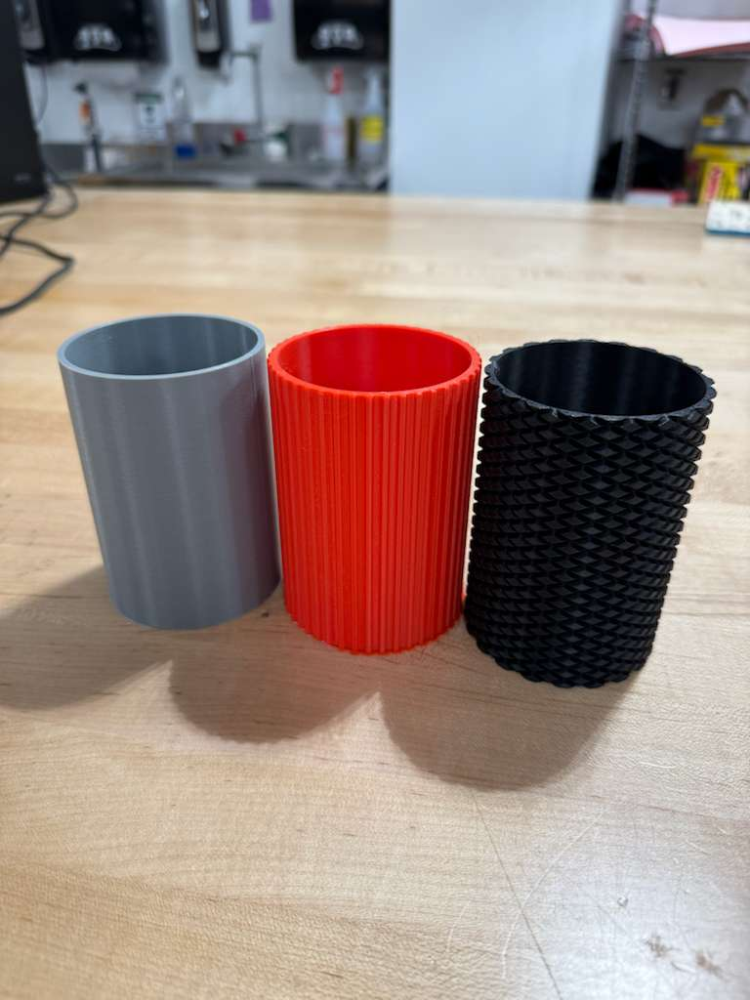
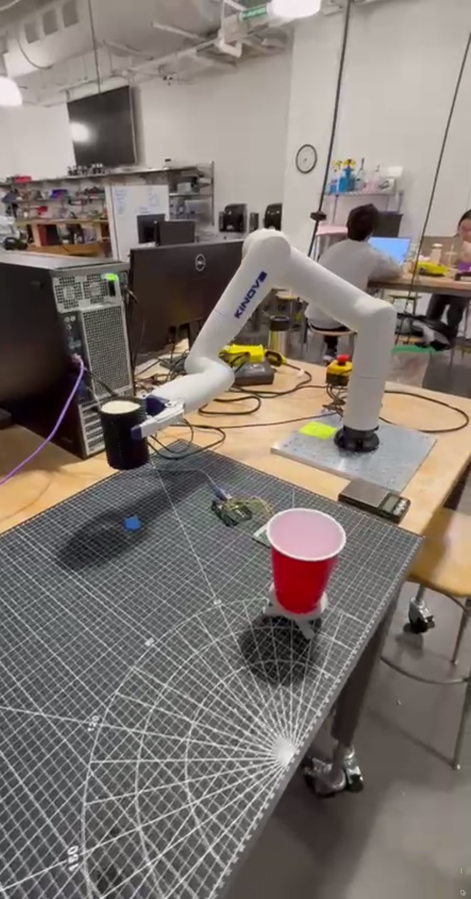
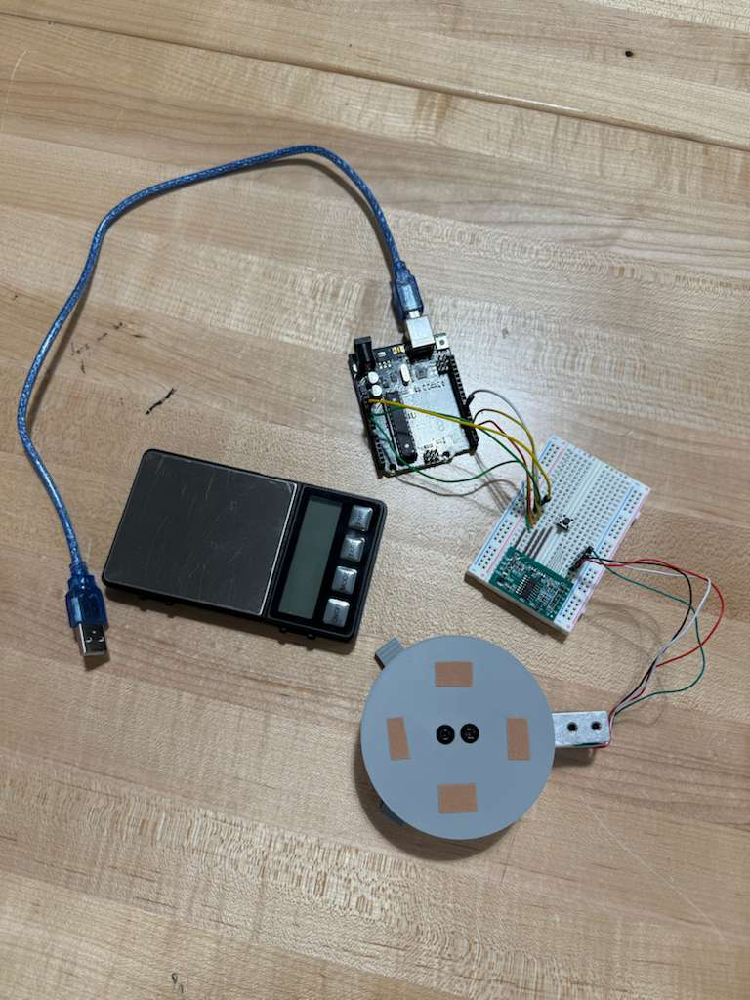
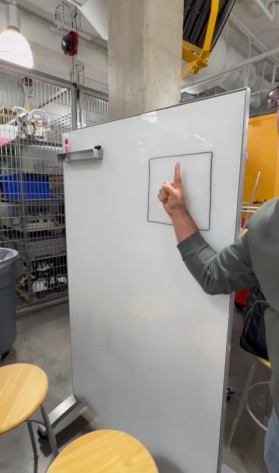
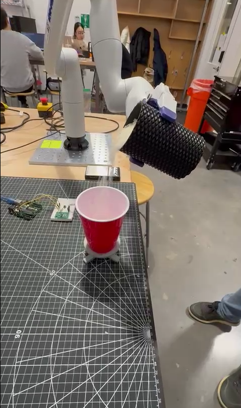

Project Media Album




Final Project: RoboBarista
Gesture-Controlled Pouring System
Closed-Loop Sensor Integration with YOLO & Kinova
Course: ECE 383 — Introduction to Robotics
Team: 5
Submitted by: Mohammad Afrazi
Date: Today
Table of Contents
1. Documentation of Robot Actions
High-Level Description
Our project, the "RoboBarista", simulates an autonomous coffee pouring station using:
- Kinova Gen3 Lite robotic arm
- YOLOv8 gesture recognition
- Serial digital weight scale
This system performs two gesture-controlled modes:
- Precision Pour: Closed-loop pouring to reach exactly 100g.
- Barista Pour: A circular parametric trajectory for artisan-style pouring.
System Diagram
Granular Description
- YOLO gesture detection with debounce logic
- Closed-loop feedback using serial weight readings
- Parametric trajectory generation using: \[x = r\cos(\theta), \quad y = r\sin(\theta)\]
Robot Execution Image
Code Explanation
The software architecture is modular and multi-threaded, including:
- detect_pub.py: YOLO inference + gesture publishing
- gesture_control.py: Supervisor with MultiThreadedExecutor
- coffee_pourer.py: Closed-loop weight control
- coffee_pourer_v2.py: Circular trajectory execution
2. Human Integration
Gesture-based non-contact interaction ensures hygienic control. System uses a lockout "busy" state to avoid accidental spills.
3. Challenges
- Blocking robot motions freeze ROS callbacks
- Solution: Threading + MultiThreadedExecutor
4. Future Work
Extend vision pipeline to detect cup pose and execute fully dynamic pick-and-place.
5. Takeaways
- Concurrency is essential in interactive robotics
- Serial sensor fusion requires careful parsing
6. Individual Contribution: Mohammad Afrazi
Robot Motion Control & Trajectory Planning
- Developed full Kinova motion pipeline
- Implemented both Precision & Barista modes
System Integration
- Connected YOLO → ROS → Kinova
- Integrated closed-loop serial weight node
Debugging & Stability
Handled concurrency, thread safety, and sensor robustness.
Appendix: Code
YOLO Publisher (detect_pub.py)
# Debounce-based publishing
if self.debounce_counter >= DEBOUNCE_FRAMES:
self.busy_check_and_publish(self.last_seen_label, best_conf)Supervisor Node (gesture_control.py)
def start_thread(self, target_fn):
thread = threading.Thread(target=self.safe_run, args=(target_fn,), daemon=True)
thread.start()Closed-Loop Pouring (coffee_pourer.py)
while True:
line = self.ser.readline().decode().strip()
value = float(line)
if value > 100:
breakCircular Trajectory (coffee_pourer_v2.py)
angle = (i / steps) * 2 * math.pi
next_x = pour_x + radius * math.cos(angle)
next_y = pour_y + radius * math.sin(angle)